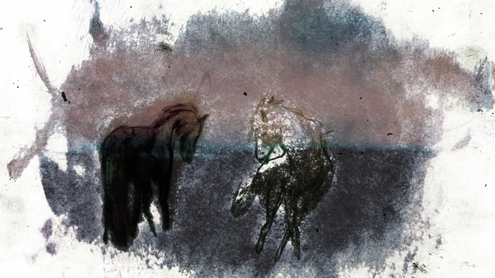
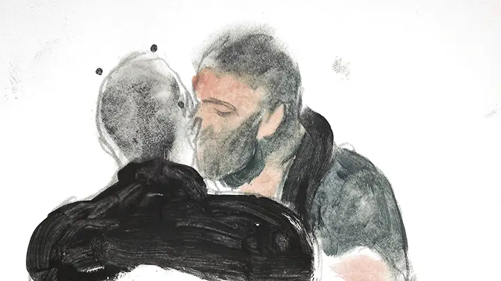
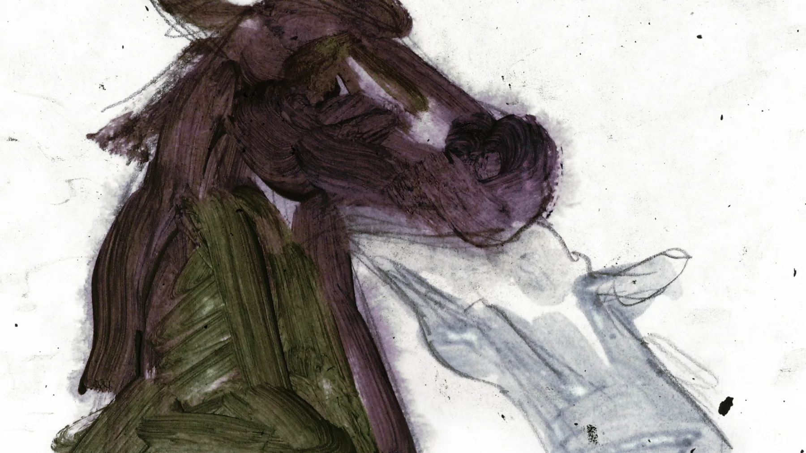
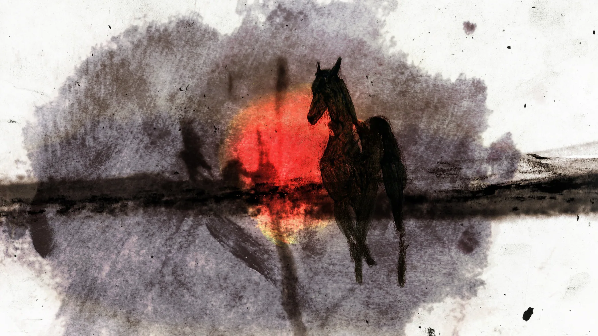
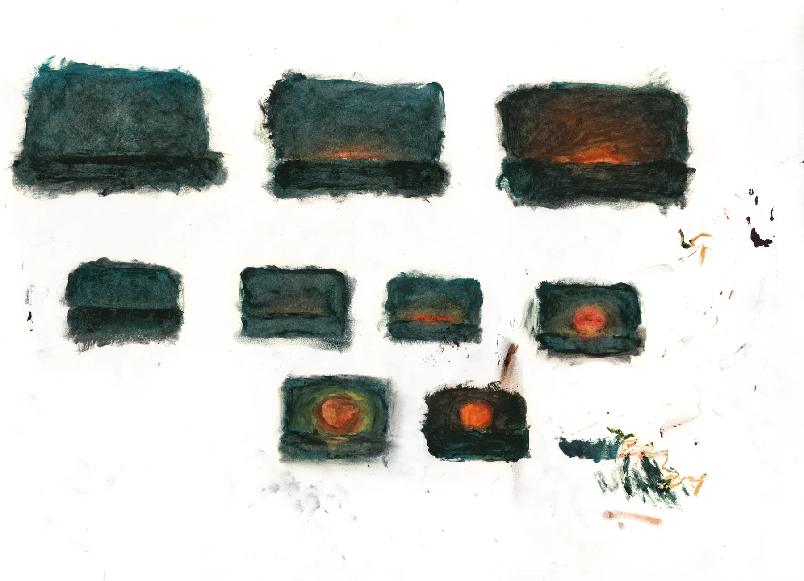

However laborious it is, hand drawn animation communicates emotion at a level no other medium can achieve. In this project, I especially wanted to affirm my most treasured personal memory, an unrequited love between two men, through drawing with my own hand frame by frame.
To save it from vanishing afar, it’s something I had to do. If I didn't grab it on time, the flesh of the experience would soon be gone forever, eventually the intense feeling will become a faded mark, like most people trying hard to remember what it was like being so passionate about that specific person, but paralyzed to do so because it has never really happened. I thought what I had at that moment was something precious, needed to be shared and validated, and that outcome was this short animation, 'For the Best'.




